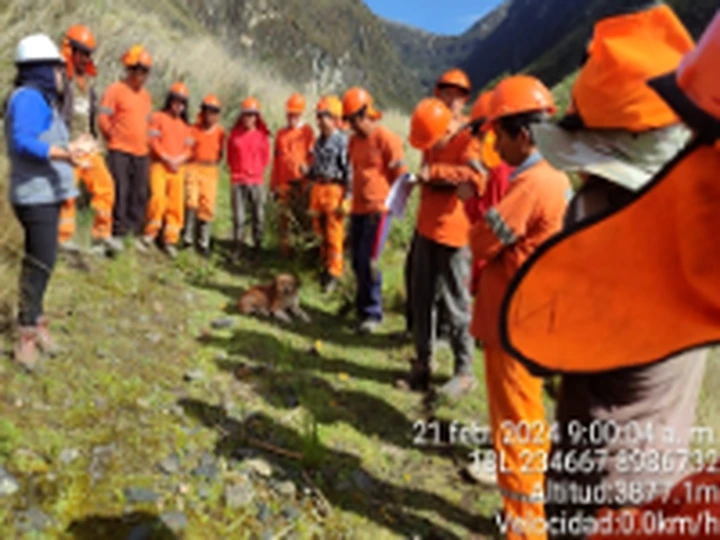

SOLUCIONES EN INFRAESTRUCTURA PARA EL SECTOR PÚBLICO
Ejecución de obras, servicios, suministro de bienes y consultoría técnica para proyectos públicos y privados.
Construimos progreso, desarrollamos futuro.
¿Quiénes somos?
FLORES | Ingeniería y Construcción es una empresa peruana habilitada en el Registro Nacional de Proveedores (RNP) para contratar con el Estado en ejecución de obras, prestación de servicios y provisión de bienes. Contamos con experiencia en contrataciones públicas, principalmente en proyectos de infraestructura, mantenimiento y servicios especializados, destacando por nuestro compromiso con la calidad, eficiencia y responsabilidad en cada proyecto.
Nuestros servicios
Cuatro líneas de actividad para proyectos y requerimientos públicos. Selecciona una tarjeta para conocer nuestros servicios y procesos.

Ejecución de obras
Desarrollo de proyectos de infraestructura pública, con soluciones técnicas adaptadas a cada intervención.
Ver servicios y forma de trabajo →
Prestación de servicios
Mantenimiento preventivo y correctivo de infraestructura, instalaciones y espacios de uso público.
Ver servicios y forma de trabajo →PROVEEDURIA DE BIENES
Suministro de bienes según las especificaciones y condiciones establecidas por cada entidad.
Ver servicios y forma de trabajo →
Consultoría de obras
Estudios, expedientes técnicos y supervisión de obras, según el alcance de cada proyecto y las habilitaciones aplicables.
Ver servicios y forma de trabajo →Fotografías recuperadas de la página de FLORES. Las imágenes son referenciales a las áreas de servicio; no constituyen fichas de contratos.
Áreas de especialización
FLORES | Ingeniería y Construcción ofrece soluciones para proyectos de infraestructura pública y privada, abarcando obras civiles, mantenimiento, abastecimiento de bienes y consultoría técnica, de acuerdo con los requerimientos de cada proyecto.
Agua potable
Alcantarillado y saneamiento
Drenaje pluvial
Pistas y veredas
Carreteras y caminos vecinales
Puentes y obras de arte
Riego tecnificado
Canales de riego y reservorios
Defensas ribereñas y muros de contención
Infraestructura educativa
Infraestructura de salud
Edificaciones y locales públicos
Parques, plazas e infraestructura deportiva
Mantenimiento y rehabilitación de infraestructura
Instalaciones eléctricas y alumbrado
Suministro de bienes y equipamiento
Estudios y expedientes técnicos
Supervisión de obras
Selecciona un área para conocer los servicios y alcances correspondientes.
Conversemos sobre tu próximo requerimiento
Atendemos consultas comerciales sobre ejecución de obras, servicios, bienes y consultoría de obras.
Escribir por WhatsAppRazón social: MIGORESLAV CONSTRUCTION S.A.C.
RUC: 20610778942